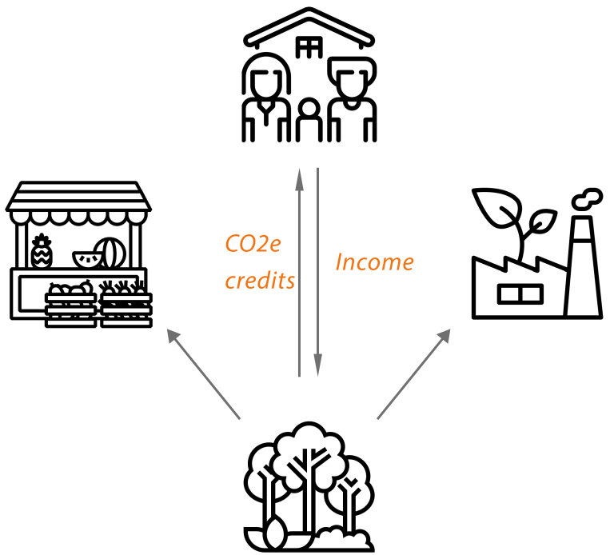

Your Footprint
Your Footprint
Make sustainability pay for itself.
A CO2e measurement and trading platform for farmers, businesses and the people buying from them — built on the Green House Gas Protocol.
Your Footprint
A CO2e measurement and trading platform for farmers, businesses and the people buying from them — built on the Green House Gas Protocol.


Measure CO2e, reduce it, and turn the result into something tradable, certifiable or simply worth knowing.

See your farm's CO2e status, cut emissions, and trade the carbon credits you generate on our marketplace.

Calculate your Scope 3 footprint, buy verified CO2e credits, and get certified carbon neutral.

Check the real, transparent story behind a product's CO2e-neutral claim — free, always.
Sign up and tell us a little about your farm, business or household.
Answer the questionnaire. It's how we build your CO2e picture.
Get your overview. See your CO2e status and any credits you've earned.
Trade, certify, or market your CO2e-neutral status — whichever applies to you.

Before we ask anyone else to use this, we run it ourselves — our tool is built and tested on Stålbæk Gård, our own working farm in Denmark.
Visit Stålbæk GårdFor more information, contact admin@yourfootprint.uk